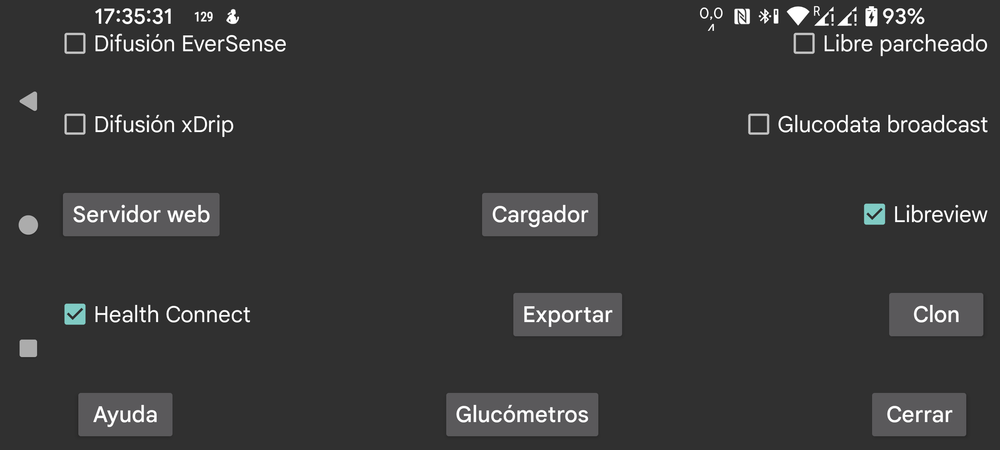

ar de es hi it ja ko nl pl ru tr uk uz en
Envía valores de glucosa minuto a minuto a Health Connect. Después puedes dar a otras apps acceso a esos valores, por ejemplo a Google Fit. A su vez, otras apps pueden recibir datos desde Google Fit.
Indica si los valores de glucosa Stream de FreeStyle Libre 2 se envían a Libreview. En los sensores FreeStyle Libre 3 puedes recuperar desde Libreview tu ID de cuenta. Toca esta opción para cambiar los ajustes.
No hay nada malo en la difusión Patched Libre en sí misma, pero xDrip modifica los valores cuando los recibe por esa vía. Como los usuarios solo usan esta difusión de esa manera, pensé en eliminarla.
xDrip no modifica los valores cuando recibe glucosa desde la difusión EverSense o cuando se usa el servidor web de Juggluco como fuente de datos Nightscout.
Otra difusión de glucosa. Permite enviar a xDrip un valor de glucosa cada minuto. xDrip ignora casi todos porque se aferra a un único valor cada 5 minutos. Puedes eliminar esa limitación editando el código fuente de xDrip: cambia 4 * 60 * 1000 por 55 * 1000 en app/src/main/java/com/eveningoutpost/dexdrip/models/BgReading.java, de forma que quede así:
public static BgReading readingNearTimeStamp(long startTime) { long margin = (55 * 1000); return readingNearTimeStamp(startTime, margin); }
La ventaja frente a Patched Libre es que xDrip no transforma los valores de glucosa de una forma difícil de seguir.
Envía la misma difusión que xDrip activa con Settings → Inter-app-settings → Broadcast locally. Apps como AndroidAPS escuchan esta difusión. A diferencia de la difusión original de xDrip, que se emitía cada 5 minutos, Juggluco la emite cada minuto.
Juggluco tiene su propia difusión de glucosa, glucodata.Minute. Consulta https://www.juggluco.nl/Juggluco/glucosebroadcast.html para más información.
Marca las apps que deben recibir esa difusión.
Servidor web que puede usarse con relojes xDrip y algunas apps Nightscout. Antes se llamaba servidor web xDrip.
Sube datos a un servidor Nightscout.
Envía todos los datos por Internet a otra instancia de Juggluco y crea así un clon de Juggluco en otro dispositivo. Los datos existentes se sobrescriben.
Guarda los datos en un archivo.